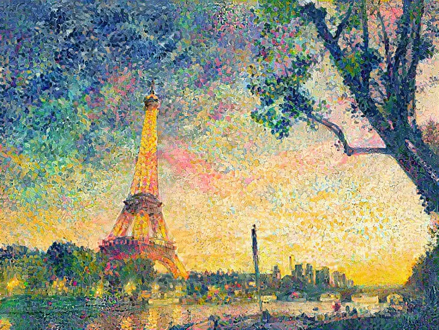

Question 10 of 10
Was this photograph generated by artificial intelligence?

This mountain was created by a machine learning process called a vector quantized generative adversarial network.
This challenege is {12} questions and takes about {4} minutes to complete.
On a scale from 1 to 10, how would you rate artificial intelligence?
1 = A.I. will be humanity's downfall :: A.I. will be humanity's savior = 10

............
This piece of artwork was generated using a machine learning process in which A.I. studies reference art and applies that style to a photograph.
Recently, an A.I.-generated piece of fine art sold for $432,500 at auction.
............
In 2018, a portrait generated by A.I. sold at auction. A.I. learned to generate the portrait by referencing works previously produced by humans.
............
This song was created by a machine learning algorithm that listened to other performers and was then able to create its own song.
............
This was created...
Was this photograph generated by artificial intelligence?
This photo was produced by a generative adversarial network capable of studying images of real faces and then producing completely made up faces.
Was this piece of music created by artificial intelligence?
This neural net outputs new music samples produced from scratch.
Was this piece of lierature created by artificial intelligence?
“I am grateful for this feedback. I am always grateful for feedback. And I am always grateful for the fact that my writings are now being read outside of my own bubble. I don’t often interact with people who don’t share my beliefs. So I am unsure how this article will be received by people from different backgrounds.”
This text was created by GPT-3, a sophisticated, A.I. driven language prediction model.
Was this photograph generated by artificial intelligence?
This photo was also produced by a generative adversarial network.
Many cities have banned the use of A.I. based facial recogition software because the technology is biased toward minorities.
Many of the largest tech companies have abandonded face regognition A.I. for law enforcement purposes.
Was this photograph generated by artificial intelligence?
This mountain was created by a machine learning process called a vector quantized generative adversarial network.
Final Survey Question
On a scale from 1 to 10, how would you rate artificial intelligence?
1 = A.I. will be humanity's downfall :: A.I. will be humanity's savior = 10